Gift Recipient Experience
Gift Recipient Experience
There are many occasions for which one might want to send a gift of alcohol to a friend or family member. However, alcohol delivery comes with the interesting constraint that the person receiving the delivery must always be home, since they need to show ID (unlike food delivery, which can be left unattended). This is particularly tricky for gifting, since the person placing the order and the person receiving the order are different.
Brand Design
Graphic Design
The Problem
Many of Drizly's gift recipients have never interacted with Drizly before. As such, they don't know what to expect, have a poor experience, and don't become customers themselves.
The Solution
Revamp the recipient scheduling experience to increase clarity around the process, allowing recipients to have a smoother delivery experience, reducing contact rate.
Existing experience
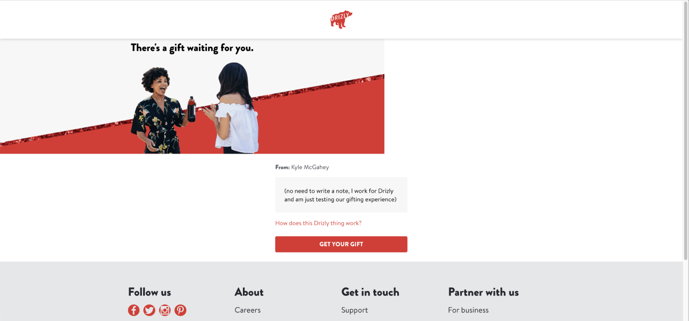
Yes, the existing page is crooked like this.
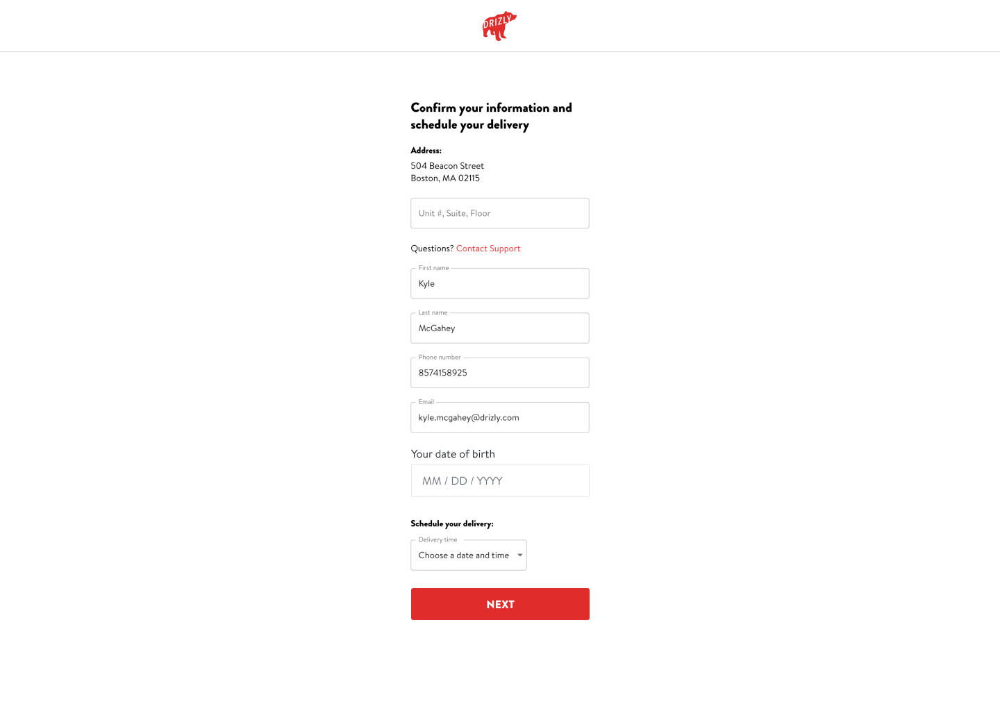
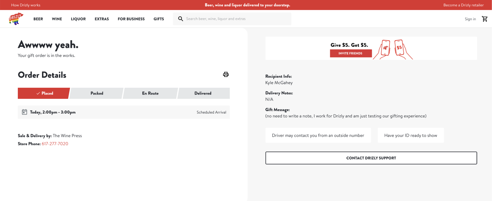
The existing gift recipient experience lacks strong branding & gifting emphasis, fails to explain what Drizly is or what the recipient should expect, and feels extremely transactional. It also forces any user who's address has been typed incorrectly to contact CX, which is a poor experience for them and a drain on resources for Drizly.
Data
Examining the data around our recipient experience revealed that recipients are new to the Drizly platform and that they consistently run into problems scheduling their gifts, with wrong address consistently being in the top 5 CX issues for scheduled gifting orders.
68%
of recipients don't have existing Drizly accounts, indicating they are potential customers.
16.5%
of gift orders contact customer support (CX), compared to only 7.3% for non-gift orders.
Only 3.6%
of gift recipients go on to place orders of their own within 90 days of receiving their gift.
Inherited work
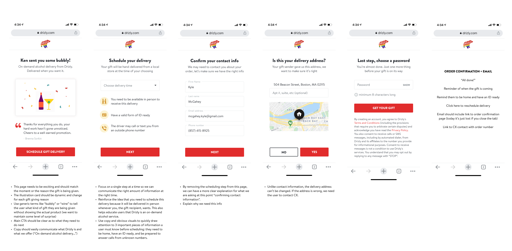
This project had already been worked on a bit by another designer when I inherited it. The thinking at the time was to break the steps up into individual tasks, allowing the user to focus on one thing at a time.
Inspiration
When I first picked up the project, I began by looking for inspiration in the wild. I found examples of personalized digital cards, clear instructions and order tracking, and clean UI, all of which I borrowed (as all good designers do!)
Draft 1
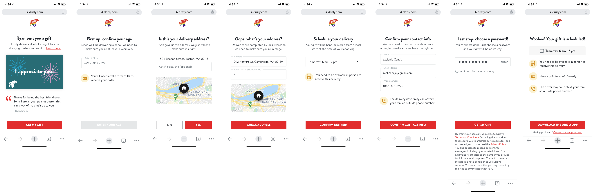
I began by following this multi-step approach, but adding a few details such as birthday (necessary to confirm legal drinking age), and I added functionality that would allow the user to input their correct address if there had been a mistake. We would then check whether or not we could deliver to that new address and adjust accordingly, only sending users to CX if we couldn't deliver.
However, user testing revealed that although participants found the single page version overwhelming, they still preferred it to the multi-step version, which they found tedious and overly lengthy. As a result, I pivoted to focus on fewer, more useful steps.
Draft 2
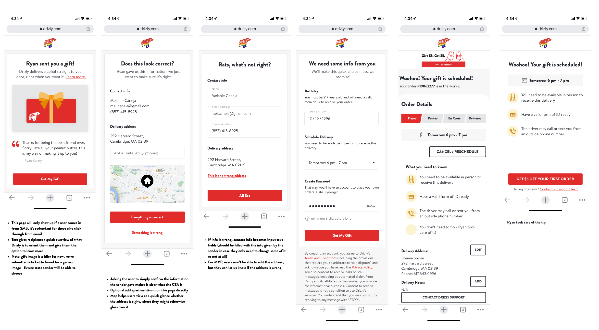
I categorized the info in the form into 2 sections: (1) information that the user must confirm and (2) information that the user must input. Splitting the steps this way allows users to focus on one type of task at a time, reducing the confusion of the single page, but also reducing the number of steps compared to the multi-step approach.
Final Designs
For the record, there were a lot more than 3 iterations in this project, but for the sake of this case study, go with it.
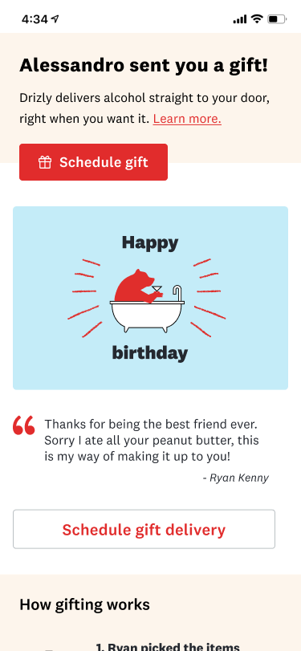
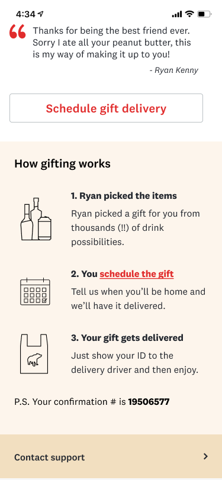
I redesigned the intro/welcome page to pull in the digital cards selected by the sender (you can see that project here), making the experience feel more personalized. I also included crucial info about how gifting works on the Drizly platform.
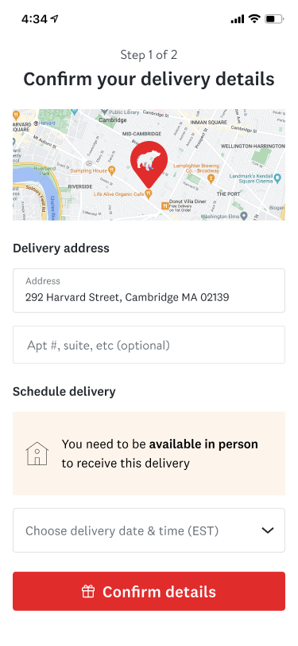
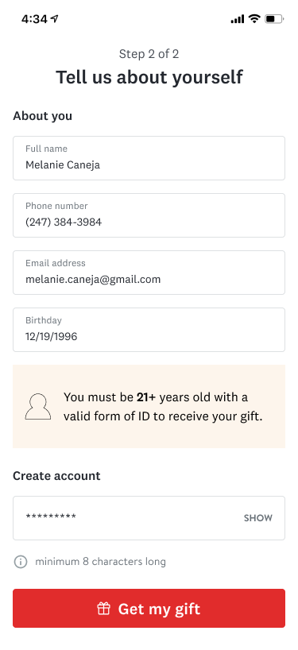
Further consideration led to the realization that the 2 groups were better suited as (1) delivery info and (2) recipient personal info. I also added helpful guidance throughout the process to explain what to expect (e.g. you must be at home).
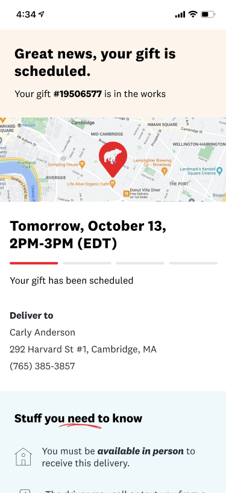
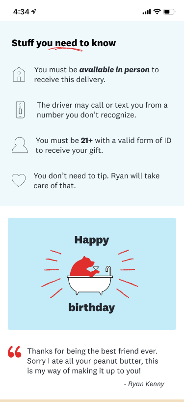
Lastly, I redesigned the confirmation page to double down on the need-to-know info, helping ensure a successful hand off, and giving proper emphasis to the status of the gift at each step.
Desktop web
Our data shows that most people navigate to this page on mobile, but there are designs for desktop as well.
Learnings
This was a really interesting project, where the initial direction of the designs didn't work in user testing and I had to identify why, pivot, and try something new. I learned a lot about information organization and how to use hierarchy to convey different information, especially in a project like this where there's a lot of information for the user to digest.
Related projects

Digital Occasion Cards
Graphic & Brand Design